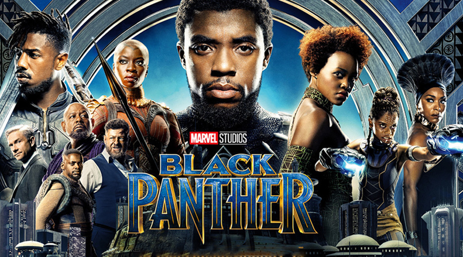

Ano de produção: 2018
Dirigido por: Ryan Coogler
ElencoMAIS SOBRE O FILME
Após os eventos de Capitão América: Guerra Civil (2016), o príncipe T’Challa volta para sua casa na isolada e tecnologicamente desenvolvida nação africana de Wakanda, para assumir seu lugar como Rei. Entretanto, quando um velho inimigo reaparece, a fibra de T’Challa tanto como Rei quanto como o herói Pantera Negra é testada. Ele é levado a um conflito que coloca o destino de Wakanda e do mundo em risco.